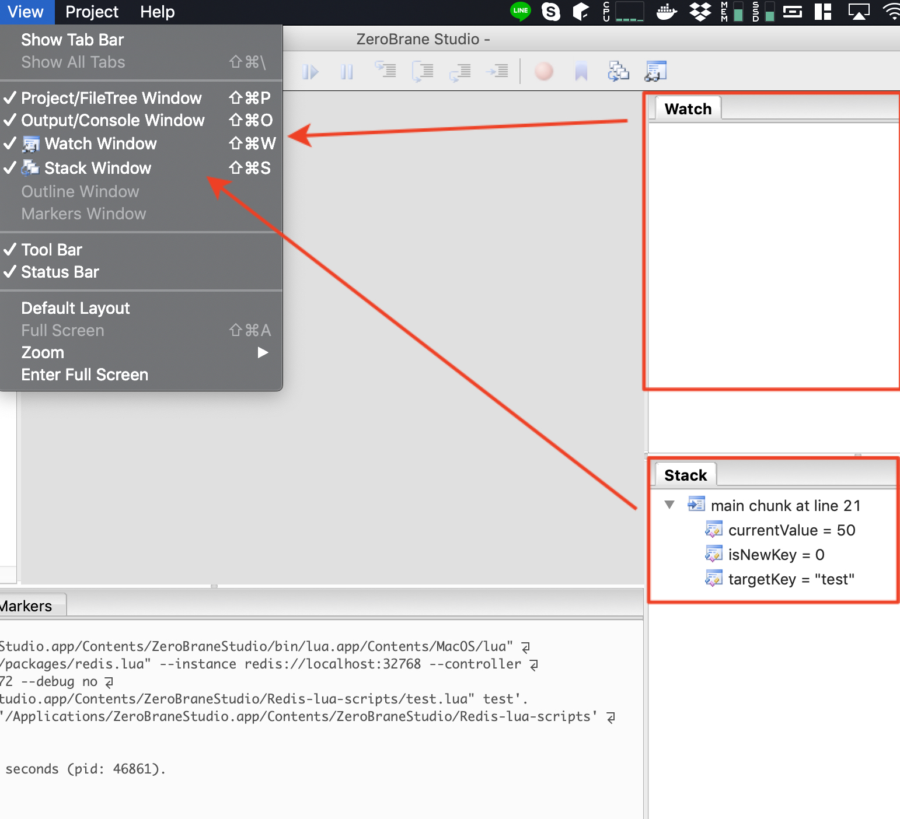
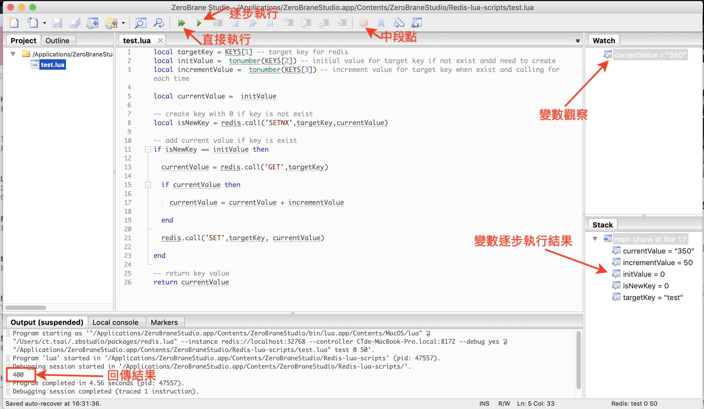
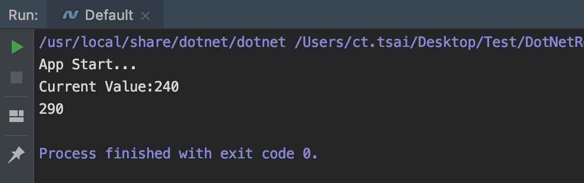

<!doctype html><html lang="zh-tw" class="theme-next mist use-motion"><head><meta charset="UTF-8"><meta http-equiv="X-UA-Compatible" content="IE=edge,chrome=1"><meta name="viewport" content="width=device-width,initial-scale=1,maximum-scale=1"><meta http-equiv="Cache-Control" content="no-transform"><meta http-equiv="Cache-Control" content="no-siteapp"><meta name="keywords" content=".NET Core,C#,.NET,Redis,Lua Script,ZeroBrane Studio,"><link rel="alternate" href="/atom.xml" title="Blackie's Failed Notes" type="application/atom+xml"><meta property="fb:admins" content="1227534428"><meta property="fb:app_id" content="1912565115693515"><meta name="description" content="分享如何在 .NET Core 使用 C# 正確的使用 Redis Lua Script 開發與除錯流程。"><meta name="keywords" content=".NET Core,C#,.NET,Redis,Lua Script,ZeroBrane Studio"><meta property="og:type" content="article"><meta property="og:title" content="Debugging Redis Lua Script with C# on macOS"><meta property="og:url" content="https://blackie1019.github.io/2019/01/13/Debugging-Redis-Lua-Script-with-C-on-macOS/index.html"><meta property="og:site_name" content="Blackie&#39;s Failed Notes"><meta property="og:description" content="分享如何在 .NET Core 使用 C# 正確的使用 Redis Lua Script 開發與除錯流程。"><meta property="og:locale" content="en"><meta property="og:image" content="https://blackie1019.github.io/2019/01/13/Debugging-Redis-Lua-Script-with-C-on-macOS/01.png"><meta property="og:image" content="https://blackie1019.github.io/2019/01/13/Debugging-Redis-Lua-Script-with-C-on-macOS/02.png"><meta property="og:image" content="https://blackie1019.github.io/2019/01/13/Debugging-Redis-Lua-Script-with-C-on-macOS/03.png"><meta property="og:image" content="https://blackie1019.github.io/2019/01/13/Debugging-Redis-Lua-Script-with-C-on-macOS/04.png"><meta property="og:image" content="https://blackie1019.github.io/2019/01/13/Debugging-Redis-Lua-Script-with-C-on-macOS/05.png"><meta property="og:image" content="https://blackie1019.github.io/2019/01/13/Debugging-Redis-Lua-Script-with-C-on-macOS/06.png"><meta property="og:image" content="https://blackie1019.github.io/2019/01/13/Debugging-Redis-Lua-Script-with-C-on-macOS/07.png"><meta property="og:image" content="https://blackie1019.github.io/2019/01/13/Debugging-Redis-Lua-Script-with-C-on-macOS/08.png"><meta property="og:image" content="https://blackie1019.github.io/2019/01/13/Debugging-Redis-Lua-Script-with-C-on-macOS/10.png"><meta property="og:updated_time" content="2021-06-15T03:56:53.093Z"><meta name="twitter:card" content="summary"><meta name="twitter:title" content="Debugging Redis Lua Script with C# on macOS"><meta name="twitter:description" content="分享如何在 .NET Core 使用 C# 正確的使用 Redis Lua Script 開發與除錯流程。"><meta name="twitter:image" content="https://blackie1019.github.io/2019/01/13/Debugging-Redis-Lua-Script-with-C-on-macOS/01.png"><meta name="twitter:creator" content="@211427260"><meta property="fb:admins" content="1227534428"><meta property="fb:app_id" content="1912565115693515"><script>!function(u){"use strict";var e=function(e,t,n){function r(){l.addEventListener&&l.removeEventListener("load",r),l.media=n||"all"}var o,a=u.document,l=a.createElement("link");if(t)o=t;else{var i=(a.body||a.getElementsByTagName("head")[0]).childNodes;o=i[i.length-1]}var d=a.styleSheets;l.rel="stylesheet",l.href=e,l.media="only x",function e(t){return a.body?t():void setTimeout(function(){e(t)})}(function(){o.parentNode.insertBefore(l,t?o:o.nextSibling)});var s=function(e){for(var t=l.href,n=d.length;n--;)if(d[n].href===t)return e();setTimeout(function(){s(e)})};return l.addEventListener&&l.addEventListener("load",r),(l.onloadcssdefined=s)(r),l};if("undefined"!=typeof exports?exports.loadCSS=e:u.loadCSS=e,u.loadCSS){var t=e.relpreload={};if(t.support=function(){try{return u.document.createElement("link").relList.supports("preload")}catch(e){return!1}},t.poly=function(){for(var e=u.document.getElementsByTagName("link"),t=0;t<e.length;t++){var n=e[t];"preload"===n.rel&&"style"===n.getAttribute("as")&&(u.loadCSS(n.href,n),n.rel=null)}},!t.support()){t.poly();var n=u.setInterval(t.poly,300);u.addEventListener&&u.addEventListener("load",function(){u.clearInterval(n)}),u.attachEvent&&u.attachEvent("onload",function(){u.clearInterval(n)})}}}("undefined"!=typeof global?global:this)</script><link rel="stylesheet" as="style" onload='this.rel="stylesheet"' href="/bundle/essential.css?v=5.0.1" type="text/css"><link rel="preload" as="style" onload='this.rel="stylesheet"' href="/bundle/advance.css?v=5.0.1" type="text/css"><noscript><link rel="stylesheet" href="/bundle/all.min.css?v=5.0.1"></noscript><link rel="shortcut icon" type="image/x-icon" href="/images/favicon.ico?v=5.0.1"><script type="text/javascript" id="hexo.configuration">var NexT=window.NexT||{},CONFIG={scheme:"Mist",sidebar:{position:"right",display:"always"},fancybox:!0,motion:!0,duoshuo:{userId:0,author:"Author"}}</script><title>Debugging Redis Lua Script with C# on macOS | Blackie's Failed Notes</title></head><body itemscope itemtype="http://schema.org/WebPage" lang="en"><script>window.fbAsyncInit=function(){FB.init({appId:"1912565115693515",xfbml:!0,version:"v2.5"})},function(e,n,t){var o,c=e.getElementsByTagName(n)[0];e.getElementById(t)||((o=e.createElement(n)).id=t,o.src="//connect.facebook.net/en/sdk.js",c.parentNode.insertBefore(o,c))}(document,"script","facebook-jssdk")</script><script>!function(e,a,t,n,g,c,o){e.GoogleAnalyticsObject=g,e.ga=e.ga||function(){(e.ga.q=e.ga.q||[]).push(arguments)},e.ga.l=1*new Date,c=a.createElement(t),o=a.getElementsByTagName(t)[0],c.async=1,c.src="//www.google-analytics.com/analytics.js",o.parentNode.insertBefore(c,o)}(window,document,"script",0,"ga"),ga("create","UA-38528893-3","auto"),ga("send","pageview")</script><div class="container one-collumn sidebar-position-right page-post-detail"><div class="headband"></div><header id="header" class="header" itemscope itemtype="http://schema.org/WPHeader"><div class="header-inner"><div class="site-meta"><div class="custom-logo-site-title"><a href="/" class="brand" rel="start"><span class="logo-line-before"><i></i></span> <span class="site-title">Blackie's Failed Notes</span> <span class="logo-line-after"><i></i></span></a></div><p class="site-subtitle">Show me. Don't tell me.</p></div><div class="site-nav-toggle"><button><span class="btn-bar"></span> <span class="btn-bar"></span> <span class="btn-bar"></span></button></div><nav class="site-nav"><ul id="menu" class="menu"><li class="menu-item menu-item-dotnet"><a href="/categories/NET/" rel="section"><i class="menu-item-icon fa fa-fw fa-icon-csharp icon-csharp"></i><br>.NET Core</a></li><li class="menu-item menu-item-aws"><a href="/tags/AWS/" rel="section"><i class="menu-item-icon fa fa-fw fa-icon-aws icon-aws"></i><br>AWS</a></li><li class="menu-item menu-item-gcp"><a href="/tags/GCP/" rel="section"><i class="menu-item-icon fa fa-fw fa-icon-google-developers icon-google-developers"></i><br>GCP</a></li><li class="menu-item menu-item-categories"><a href="/categories" rel="section"><i class="menu-item-icon fa fa-fw fa-th-list th-list"></i><br>Categories</a></li><li class="menu-item menu-item-archives"><a href="/archives" rel="section"><i class="menu-item-icon fa fa-fw fa-archive archive"></i><br>Archives</a></li><li class="menu-item menu-item-tags"><a href="/tags" rel="section"><i class="menu-item-icon fa fa-fw fa-tags tags"></i><br>Tags</a></li><li class="menu-item menu-item-search"><a href="#" class="popup-trigger"><i class="menu-item-icon fa fa-search fa-fw"></i><br>Search</a></li></ul><div class="site-search"><div class="popup"><span class="search-icon fa fa-search"></span> <input type="text" id="local-search-input"><div id="local-search-result"></div><span class="popup-btn-close">close</span></div></div></nav></div></header><main id="main" class="main"><div class="main-inner"><div class="content-wrap"><div id="content" class="content"><div id="posts" class="posts-expand"><article class="post post-type-normal" itemscope itemtype="http://schema.org/Article"><header class="post-header"><h1 class="post-title" itemprop="name headline">Debugging Redis Lua Script with C# on macOS</h1><div class="post-meta"><span class="post-time"><span class="post-meta-item-icon"><i class="fa fa-calendar-o"></i> </span><span class="post-meta-item-text">Posted on</span> <time itemprop="dateCreated" datetime="2019-01-13T06:20:07+00:00" content="2019-01-13">2019-01-13 </time></span><span class="post-category">&nbsp; | &nbsp; <span class="post-meta-item-icon"><i class="fa fa-folder-o"></i> </span><span class="post-meta-item-text">In</span> <span itemprop="about" itemscope itemtype="https://schema.org/Thing"><a href="/categories/NET/" itemprop="url" rel="index"><span itemprop="name">.NET</span> </a></span></span><span id="pageviews">&nbsp; | &nbsp; <i class="fa fa-star"></i> <span class="count"></span> </span><span class="post-comments-count">&nbsp; | &nbsp; <a href="/2019/01/13/Debugging-Redis-Lua-Script-with-C-on-macOS/#comments" itemprop="discussionUrl"><span class="post-comments-count disqus-comment-count" data-disqus-identifier="2019/01/13/Debugging-Redis-Lua-Script-with-C-on-macOS/" itemprop="commentsCount"></span></a></span></div></header><div class="post-body" itemprop="articleBody"><p>分享如何在 .NET Core 使用 C# 正確的使用 Redis Lua Script 開發與除錯流程。</p><a id="more"></a><p>先前<a href="http://blackie1019.github.io/2018/05/01/Write-Redis-Lua-Script-with-ZeroBrane-Studio/">分享如何使用 ZeroBrane Studio 協助 Redis 的 Lua Script 開發與除錯</a>介紹如何正確地使用工具來幫我們除錯 Redis Lua Script.</p><p>本次結合 C#, .NET Core 與 macOS 環境，重新整理與介紹如何正確地使用 Redis Lua Script.</p><h2 id="為什麼使用-Redis-Lua-Script"><a href="#為什麼使用-Redis-Lua-Script" class="headerlink" title="為什麼使用 Redis Lua Script"></a>為什麼使用 Redis Lua Script</h2><p>在大部分的開發者中，會使用 Redis 相關 framework 的人很普遍，但絕大多數僅使用這些 Framework 已包裹好的指令做操作，鮮少自己將商業邏輯包裹成一個 <code>Lua Script</code> 指令操作．</p><p>以 C# + .NET Core 為例，大多使用者都會使用下列的 framework 操作 Redis 內資料:</p><ul><li><a href="https://github.com/StackExchange/StackExchange.Redis" target="_blank" rel="noopener">StackExchange</a></li><li><a href="https://github.com/ServiceStack/ServiceStack.Redis" target="_blank" rel="noopener">ServiceStack</a></li></ul><p>如果今天要開發的一個資料儲存的情境如下:</p><ul><li>確認當前 <code>test</code> 是否存在，如果不存在則在第一次呼叫的時候給予預設值 <code>0</code></li><li>第二次開始的呼叫會針對 <code>test</code> 當前的值每次增加 <code>50</code></li></ul><p>以一般 Redis 的指令操作來說我們需要透過多個指令串接以上內容，這會造成 .NET Core 的程式多次進出 Redis Instance 內．</p><p>而透過 <code>Lua Script</code> 以上的指令可以僅透過一個客製的指令進行操作，大幅提升 Redis 效能與反應．</p><p>Redis的架構設計<strong>單執行緒</strong>的設計，在運行Lua script的時候是沒辦法處理其他的請求的，所以Lua script並不能像Database的Stored Procedure一樣運行複雜的商務邏輯，個人認為如果有以下情境可以考慮採用：</p><ul><li>避免多次請求來回浪費掉的round-trip network latency</li><li>創造出 Redis 與 Redis Framework 沒有支援的command</li><li>Atomic的資料操作 與 Transaction</li></ul><h2 id="Redis-Lua-Script-Development-and-Debugging-on-macOS"><a href="#Redis-Lua-Script-Development-and-Debugging-on-macOS" class="headerlink" title="Redis Lua Script Development and Debugging on macOS"></a>Redis Lua Script Development and Debugging on macOS</h2><p>這邊開始介紹如何在 macOS 的環境開發 Redis Lua Script</p><p>大致上的內容請先參考<a href="http://blackie1019.github.io/2018/05/01/Write-Redis-Lua-Script-with-ZeroBrane-Studio/">分享如何使用 ZeroBrane Studio 協助 Redis 的 Lua Script 開發與除錯</a></p><h3 id="Redis-with-Docker"><a href="#Redis-with-Docker" class="headerlink" title="Redis with Docker"></a>Redis with Docker</h3><p>環境使用 Docker 進行 Redis Instance 的建置，指令如下：</p><pre><code>docker pull Redis
docker run -P --name redis-lab -d redis
</code></pre><p>透過 <code>-P</code> 參數，這裡進行動態的 port 配置與對應至 container 內的 <code>6379</code> port</p><p>從 <code>docker ps -a</code> 可以查到當前配置的 port 為 32768</p><p></p><p>透過以下指令與 <code>redis-cli</code> 取得當前的所有鍵值</p><pre><code>docker exec -it &lt;container-id&gt; bash
redis-cli
KEYS *
</code></pre><p></p><h3 id="Install-ZeroBrane-Studio"><a href="#Install-ZeroBrane-Studio" class="headerlink" title="Install ZeroBrane Studio"></a>Install ZeroBrane Studio</h3><p>至官網下載<a href="https://studio.zerobrane.com/download?not-this-time" target="_blank" rel="noopener">ZeroBrane Studio</a> 與 <a href="https://raw.githubusercontent.com/pkulchenko/ZeroBranePackage/master/redis.lua" target="_blank" rel="noopener">ZeroBranePackage/redis.lua</a> 這個 plugin</p><p>安裝好後可配置使用者設定，載入剛下載的 plugin 至 ZeroBrane Studio 中：</p><pre><code>mkdir $HOME/.zbstudio
mkdir $HOME/.zbstudio/packages
</code></pre><p>接者將下載的 <code>redis.lua</code> plugin 檔案放入剛剛建立的目錄下($HOME/.zbstudio/packages)</p><p>接著將程序打開後可以看到下圖及代表設定成功:</p><p></p><p>而開發時不要忘記要開啟 <code>watch window</code> 與 <code>stack window</code> 協助觀察變數的變化</p><p></p><h3 id="Try-round-for-ZeroBrane-Studio-debugging"><a href="#Try-round-for-ZeroBrane-Studio-debugging" class="headerlink" title="Try round for ZeroBrane Studio debugging"></a>Try round for ZeroBrane Studio debugging</h3><p>這邊開啟應用程式後選擇 <code>redis</code> 則會跳出連線設定視窗，如果要重設則需要重新啟動 ZeroBrane Studio 才可以變更．</p><p></p><p>而如果開發的 <code>Lua Script</code> 本身有帶入參數的需求可以使用 <code>Command Line Parameters</code> 的設定帶入(多個參數可用<em>空白</em>分隔)</p><p></p><p>如需求所列，這邊我們建立的 Lua Script 如下:</p><p>test.lua<br></p><figure class="highlight lua"><table><tr><td class="gutter"><pre><span class="line">1</span><br><span class="line">2</span><br><span class="line">3</span><br><span class="line">4</span><br><span class="line">5</span><br><span class="line">6</span><br><span class="line">7</span><br><span class="line">8</span><br><span class="line">9</span><br><span class="line">10</span><br><span class="line">11</span><br><span class="line">12</span><br><span class="line">13</span><br><span class="line">14</span><br><span class="line">15</span><br><span class="line">16</span><br><span class="line">17</span><br><span class="line">18</span><br><span class="line">19</span><br><span class="line">20</span><br><span class="line">21</span><br><span class="line">22</span><br><span class="line">23</span><br><span class="line">24</span><br><span class="line">25</span><br><span class="line">26</span><br></pre></td><td class="code"><pre><span class="line"><span class="keyword">local</span> targetKey = KEYS[<span class="number">1</span>] <span class="comment">-- target key for redis</span></span><br><span class="line"><span class="keyword">local</span> initValue =  <span class="built_in">tonumber</span>(ARGV[<span class="number">1</span>]) <span class="comment">-- initial value for target key if not exist and need to create</span></span><br><span class="line"><span class="keyword">local</span> incrementValue =  <span class="built_in">tonumber</span>(ARGV[<span class="number">2</span>]) <span class="comment">-- increment value for target key when exist and calling for each time</span></span><br><span class="line"></span><br><span class="line"><span class="keyword">local</span> currentValue =  initValue</span><br><span class="line"></span><br><span class="line"><span class="comment">-- create key with 0 if key is not exist</span></span><br><span class="line"><span class="keyword">local</span> isNewKey = redis.call(<span class="string">'SETNX'</span>,targetKey,currentValue)</span><br><span class="line"></span><br><span class="line"><span class="comment">-- add current value if key is exist</span></span><br><span class="line"><span class="keyword">if</span> isNewKey == initValue <span class="keyword">then</span></span><br><span class="line"></span><br><span class="line">  currentValue = redis.call(<span class="string">'GET'</span>,targetKey)</span><br><span class="line"></span><br><span class="line">  <span class="keyword">if</span> currentValue <span class="keyword">then</span></span><br><span class="line"></span><br><span class="line">    currentValue = currentValue + incrementValue</span><br><span class="line"></span><br><span class="line">  <span class="keyword">end</span></span><br><span class="line"></span><br><span class="line">  redis.call(<span class="string">'SET'</span>,targetKey, currentValue)</span><br><span class="line"></span><br><span class="line"><span class="keyword">end</span></span><br><span class="line"></span><br><span class="line"><span class="comment">-- return key value</span></span><br><span class="line"><span class="keyword">return</span> currentValue</span><br></pre></td></tr></table></figure><p></p><p>這邊就需要傳入三個參數，所以設定上則變成:</p><p></p><p>test 為 <em>Key</em>，透過中間的<code>逗號</code>分隔了後面兩個 <em>Arg</em> ，分別為 0 與 10</p><p>而介面上簡單介紹如下(詳細介紹可參考<a href="http://blackie1019.github.io/2018/05/01/Write-Redis-Lua-Script-with-ZeroBrane-Studio/">如何使用 ZeroBrane Studio 協助 Redis 的 Lua Script 開發與除錯</a>)：</p><p></p><h2 id="NET-Core-with-Redis-Lua-Script"><a href="#NET-Core-with-Redis-Lua-Script" class="headerlink" title=".NET Core with Redis Lua Script"></a>.NET Core with Redis Lua Script</h2><p>這邊最後給一段 Sample Code 說明如何透過預先載入的方式避免執行重複的 Redis Lua Script 所造成的內存耗盡問題．</p><p>其實 <em>Redis</em> 本身就有這個做法，可透過 <a href="https://redis.io/commands/script-load" target="_blank" rel="noopener">SCRIPT LOAD</a> 產生一組 SHA 的編碼後，透過 SHA 與 <a href="https://redis.io/commands/evalsha" target="_blank" rel="noopener">EVALSHA</a> 來執行．</p><p>所以這邊的 C# 與上面已經寫好的 test.lua 的呼叫如下：</p><p>program.cs</p><figure class="highlight csharp"><table><tr><td class="gutter"><pre><span class="line">1</span><br><span class="line">2</span><br><span class="line">3</span><br><span class="line">4</span><br><span class="line">5</span><br><span class="line">6</span><br><span class="line">7</span><br><span class="line">8</span><br><span class="line">9</span><br><span class="line">10</span><br><span class="line">11</span><br><span class="line">12</span><br><span class="line">13</span><br><span class="line">14</span><br><span class="line">15</span><br><span class="line">16</span><br><span class="line">17</span><br><span class="line">18</span><br><span class="line">19</span><br><span class="line">20</span><br><span class="line">21</span><br><span class="line">22</span><br><span class="line">23</span><br><span class="line">24</span><br><span class="line">25</span><br><span class="line">26</span><br><span class="line">27</span><br><span class="line">28</span><br><span class="line">29</span><br><span class="line">30</span><br><span class="line">31</span><br><span class="line">32</span><br><span class="line">33</span><br><span class="line">34</span><br><span class="line">35</span><br><span class="line">36</span><br><span class="line">37</span><br><span class="line">38</span><br><span class="line">39</span><br><span class="line">40</span><br><span class="line">41</span><br><span class="line">42</span><br><span class="line">43</span><br><span class="line">44</span><br><span class="line">45</span><br><span class="line">46</span><br><span class="line">47</span><br><span class="line">48</span><br><span class="line">49</span><br><span class="line">50</span><br><span class="line">51</span><br><span class="line">52</span><br><span class="line">53</span><br><span class="line">54</span><br><span class="line">55</span><br><span class="line">56</span><br><span class="line">57</span><br><span class="line">58</span><br><span class="line">59</span><br><span class="line">60</span><br><span class="line">61</span><br><span class="line">62</span><br><span class="line">63</span><br><span class="line">64</span><br><span class="line">65</span><br><span class="line">66</span><br><span class="line">67</span><br><span class="line">68</span><br><span class="line">69</span><br><span class="line">70</span><br><span class="line">71</span><br></pre></td><td class="code"><pre><span class="line"><span class="keyword">using</span> System;</span><br><span class="line"><span class="keyword">using</span> System.Collections.Generic;</span><br><span class="line"><span class="keyword">using</span> System.Threading;</span><br><span class="line"><span class="keyword">using</span> System.Threading.Tasks;</span><br><span class="line"><span class="keyword">using</span> System.Xml;</span><br><span class="line"><span class="keyword">using</span> StackExchange.Redis;</span><br><span class="line"></span><br><span class="line"><span class="keyword">namespace</span> <span class="title">ConsoleApp1</span></span><br><span class="line">&#123;</span><br><span class="line">    <span class="keyword">class</span> <span class="title">Program</span></span><br><span class="line">    &#123;</span><br><span class="line">        <span class="function"><span class="keyword">static</span> <span class="keyword">void</span> <span class="title">Main</span>(<span class="params"><span class="keyword">string</span>[] args</span>)</span></span><br><span class="line"><span class="function">        </span>&#123;</span><br><span class="line">            <span class="keyword">var</span> redisHost = <span class="string">"localhost:32768"</span>;</span><br><span class="line">            </span><br><span class="line">            Console.WriteLine(<span class="string">"App Start..."</span>);</span><br><span class="line">            </span><br><span class="line">            <span class="keyword">using</span> (<span class="keyword">var</span> conn = ConnectionMultiplexer.Connect(redisHost))</span><br><span class="line">            &#123;</span><br><span class="line">                <span class="keyword">var</span> db = conn.GetDatabase();</span><br><span class="line">                Console.WriteLine(<span class="string">$"Current Value:<span class="subst">&#123;db.StringGet(<span class="string">"test"</span>).ToString()&#125;</span>"</span>);</span><br><span class="line">                </span><br><span class="line">                <span class="keyword">var</span> loadedLuaScripts = <span class="keyword">new</span> Dictionary&lt;LuaScriptEnum, LoadedLuaScript&gt;();</span><br><span class="line">                loadedLuaScripts.Add(LuaScriptEnum.AddValueWithTargetKey, PrepareLuaScript(conn, redisHost,</span><br><span class="line">                    <span class="string">@"local targetKey = KEYS[1] -- target key for redis</span></span><br><span class="line"><span class="string">local initValue =  tonumber(ARGV[1]) -- initial value for target key if not exist and need to create</span></span><br><span class="line"><span class="string">local incrementValue =  tonumber(ARGV[2]) -- increment value for target key when exist and calling for each time</span></span><br><span class="line"><span class="string"></span></span><br><span class="line"><span class="string">local currentValue =  initValue </span></span><br><span class="line"><span class="string"></span></span><br><span class="line"><span class="string">-- create key with 0 if key is not exist </span></span><br><span class="line"><span class="string">local isNewKey = redis.call('SETNX',targetKey,currentValue)</span></span><br><span class="line"><span class="string"></span></span><br><span class="line"><span class="string">-- add current value if key is exist</span></span><br><span class="line"><span class="string">if isNewKey == initValue then </span></span><br><span class="line"><span class="string"></span></span><br><span class="line"><span class="string">  currentValue = redis.call('GET',targetKey)</span></span><br><span class="line"><span class="string"></span></span><br><span class="line"><span class="string">  if currentValue then</span></span><br><span class="line"><span class="string"></span></span><br><span class="line"><span class="string">    currentValue = currentValue + incrementValue</span></span><br><span class="line"><span class="string"></span></span><br><span class="line"><span class="string">  end</span></span><br><span class="line"><span class="string"></span></span><br><span class="line"><span class="string">  redis.call('SET',targetKey, currentValue)</span></span><br><span class="line"><span class="string"></span></span><br><span class="line"><span class="string">end </span></span><br><span class="line"><span class="string"></span></span><br><span class="line"><span class="string">-- return key value</span></span><br><span class="line"><span class="string">return currentValue"</span>));</span><br><span class="line"></span><br><span class="line">                <span class="keyword">var</span> executedReturn = db.ScriptEvaluate(loadedLuaScripts[LuaScriptEnum.AddValueWithTargetKey].Hash,</span><br><span class="line">                    <span class="keyword">new</span> RedisKey[] &#123;<span class="string">"test"</span>&#125;,</span><br><span class="line">                    <span class="keyword">new</span> RedisValue[] &#123;<span class="number">0</span>, <span class="number">50</span>&#125;);</span><br><span class="line">                Console.WriteLine(executedReturn);</span><br><span class="line">            &#125;</span><br><span class="line">        &#125;</span><br><span class="line">        </span><br><span class="line">        <span class="function"><span class="keyword">private</span> <span class="keyword">static</span> LoadedLuaScript <span class="title">PrepareLuaScript</span>(<span class="params">ConnectionMultiplexer redis, <span class="keyword">string</span> defaultServer, <span class="keyword">string</span> luaScriptContent</span>)</span></span><br><span class="line"><span class="function">        </span>&#123;</span><br><span class="line">            <span class="keyword">return</span> LuaScript</span><br><span class="line">                .Prepare(luaScriptContent)</span><br><span class="line">                .Load(redis.GetServer(defaultServer));</span><br><span class="line">        &#125;</span><br><span class="line">    &#125;</span><br><span class="line"></span><br><span class="line">    <span class="keyword">public</span> <span class="keyword">enum</span> LuaScriptEnum</span><br><span class="line">    &#123;</span><br><span class="line">        AddValueWithTargetKey</span><br><span class="line">    &#125;</span><br><span class="line">&#125;</span><br></pre></td></tr></table></figure><p>執行結果如下：</p><p></p><p>這段程式碼還有呼叫了<code>Load()</code>，這會把Lua script先載入指定的Redis server</p><p>一般指定 <em>Master</em> 就可以了，會自動鏡像備份到<em>Slave</em>。</p><p>載入後會拿到一個SHA1的 <em>hash code</em>，之後執行時只需傳入這個code，不需重傳整份Lua script，對需要頻繁執行的script有效能上的幫助。</p></div><div></div><div></div><footer class="post-footer"><div class="post-tags"><a href="/tags/NET-Core/" rel="tag">#.NET Core</a> <a href="/tags/C/" rel="tag">#C#</a> <a href="/tags/NET/" rel="tag">#.NET</a> <a href="/tags/Redis/" rel="tag">#Redis</a> <a href="/tags/Lua-Script/" rel="tag">#Lua Script</a> <a href="/tags/ZeroBrane-Studio/" rel="tag">#ZeroBrane Studio</a></div><div class="fb-like" data-layout="button_count" data-share="true"></div><hr><div class="signature"><div class="mwt_border"><span class="arrow_l_int"></span> <span class="arrow_l_out"></span><p>如果覺得還不錯麻煩請在文章上面給予推薦，支持是小弟持續努力產出的動力</p></div></div><div class="post-nav"><div class="post-nav-next post-nav-item"><a href="/2018/11/14/MariaDB-MySQL-collaborative-development-with-Docker-Compose-Container/" rel="next" title="MariaDB/MySQL collaborative development with Docker-Compose/Container"><i class="fa fa-chevron-left"></i> MariaDB/MySQL collaborative development with Docker-Compose/Container</a></div><div class="post-nav-prev post-nav-item"><a href="/2019/02/10/gRPC-development-on-NET-Core-Basic/" rel="prev" title="gRPC development on .NET Core - Basic">gRPC development on .NET Core - Basic <i class="fa fa-chevron-right"></i></a></div></div></footer></article><div class="post-spread"></div></div></div><div class="comments" id="comments"><div id="disqus_thread"><noscript>Please enable JavaScript to view the <a href="//disqus.com/?ref_noscript">comments powered by Disqus.</a></noscript></div></div></div><div class="sidebar-toggle"><div class="sidebar-toggle-line-wrap"><span class="sidebar-toggle-line sidebar-toggle-line-first"></span> <span class="sidebar-toggle-line sidebar-toggle-line-middle"></span> <span class="sidebar-toggle-line sidebar-toggle-line-last"></span></div></div><aside id="sidebar" class="sidebar"><div class="sidebar-inner"><ul class="sidebar-nav motion-element"><li class="sidebar-nav-toc sidebar-nav-active" data-target="post-toc-wrap">Table of Contents</li><li class="sidebar-nav-overview" data-target="site-overview">Overview</li></ul><section class="site-overview sidebar-panel"><div class="site-author motion-element" itemprop="author" itemscope itemtype="http://schema.org/Person"><p class="site-author-name" itemprop="name">Blackie Tsai</p><p class="site-description motion-element" itemprop="description">Ever tried. Ever failed. No matter. Try Again. Fail again. Fail better.</p></div><nav class="site-state motion-element"><div class="site-state-item site-state-visitors" id="visitors"><span class="site-state-item-count count">0</span> <span class="site-state-item-name">visitors</span></div><div class="site-state-item site-state-posts"><a href="/archives"><span class="site-state-item-count">219</span> <span class="site-state-item-name">posts</span></a></div><div class="site-state-item site-state-categories"><a href="/categories"><span class="site-state-item-count">19</span> <span class="site-state-item-name">categories</span></a></div><div class="site-state-item site-state-tags"><a href="/tags"><span class="site-state-item-count">161</span> <span class="site-state-item-name">tags</span></a></div></nav><div class="feed-link motion-element"><a href="/atom.xml" rel="alternate"><i class="fa fa-rss"></i> RSS</a></div><div class="links-of-author motion-element"><span class="links-of-author-item"><a href="https://github.com/blackie1019" target="_blank" title="GitHub"><i class="fa fa-fw fa-github"></i> </a></span><span class="links-of-author-item"><a href="https://www.facebook.com/chentien.tsai" target="_blank" title="Facebook"><i class="fa fa-fw fa-facebook"></i> </a></span><span class="links-of-author-item"><a href="https://tw.linkedin.com/in/blackie1019" target="_blank" title="LinkedIn"><i class="fa fa-fw fa-linkedin"></i> </a></span><span class="links-of-author-item"><a href="https://www.slideshare.net/chentientsai" target="_blank" title="SlideShare"><i class="fa fa-fw fa-slideshare"></i></a></span></div><div class="microsoft_mvp motion-element"><span class="links-of-cert-item"><a href="https://mvp.microsoft.com/en-us/PublicProfile/5002726" target="_blank" title="microsoft-mvp" rel="external nofollow"></a></span></div><div class="certification motion-element"><details><summary><i class="fa fa-fw fa-certificate"></i>Management/Agile Certifications</summary><span class="links-of-cert-item"><a href="https://www.youracclaim.com/badges/0971684d-561b-4294-8161-351794f7aa6b" target="_blank" title="pmp" rel="external nofollow"> </a></span><span class="links-of-cert-item"><a href="https://www.youracclaim.com/badges/47cf7d59-1000-4566-94de-ee1f73f5dfee" target="_blank" title="acp" rel="external nofollow"> </a></span><span class="links-of-cert-item"><a href="https://www.scrumalliance.org/community/profile/ctsai16" target="_blank" title="csm" rel="external nofollow"> </a></span><span class="links-of-cert-item"><a href="https://www.scrumalliance.org/community/profile/ctsai16" target="_blank" title="cspo" rel="external nofollow"> </a></span><span class="links-of-cert-item"><a href="https://www.scrumalliance.org/community/profile/ctsai16" target="_blank" title="csd" rel="external nofollow"></a></span></details><details><summary><i class="fa fa-fw fa-trophy"></i>Technical Certifications</summary><span class="links-of-cert-item"><a href="https://www.youracclaim.com/badges/a9365dac-0a86-4471-9fea-255d33c0e09c" target="_blank" title="mcsd-app-2017" rel="external nofollow"> </a></span><span class="links-of-cert-item"><a href="https://www.youracclaim.com/badges/92e7fd9c-03b2-486c-90dd-db495c637ad9" target="_blank" title="mcsa-web" rel="external nofollow"></a></span></details></div><div class="links-of-blogroll motion-element links-of-blogroll-block"><div class="links-of-blogroll-title"><i class="fa fa-fw fa-thumbs-o-up"></i> Recommendation</div><ul class="links-of-blogroll-list"><li class="links-of-blogroll-item"><a href="http://blog.jimmywu.cc" title="JimmyWu - 不受限的技術狂人" target="_blank" rel="external nofollow">JimmyWu - 不受限的技術狂人</a></li><li class="links-of-blogroll-item"><a href="http://blog.johnwu.cc" title="JohnWu - 簡單不想寫，太難不會寫" target="_blank" rel="external nofollow">JohnWu - 簡單不想寫，太難不會寫</a></li><li class="links-of-blogroll-item"><a href="http://dog0416.blogspot.tw/" title="Duran - Matsurigoto" target="_blank" rel="external nofollow">Duran - Matsurigoto</a></li><li class="links-of-blogroll-item"><a href="http://larrynung.github.io" title="Larry - Level up" target="_blank" rel="external nofollow">Larry - Level up</a></li><li class="links-of-blogroll-item"><a href="http://ouch1978.github.io" title="Ouch - Developer ≈ Designer" target="_blank" rel="external nofollow">Ouch - Developer ≈ Designer</a></li><li class="links-of-blogroll-item"><a href="http://retrydb.blogspot.tw/" title="Max W - Retry" target="_blank" rel="external nofollow">Max W - Retry</a></li><li class="links-of-blogroll-item"><a href="https://yi-shiuan.github.io/" title="Bruno - 饅頭小舖" target="_blank" rel="external nofollow">Bruno - 饅頭小舖</a></li><li class="links-of-blogroll-item"><a href="https://jed1978.github.io/" title="Jed - 大濕大師" target="_blank" rel="external nofollow">Jed - 大濕大師</a></li></ul></div></section><section class="post-toc-wrap motion-element sidebar-panel sidebar-panel-active"><div class="post-toc"><div class="post-toc-content"><ol class="nav"><li class="nav-item nav-level-2"><a class="nav-link" href="#為什麼使用-Redis-Lua-Script"><span class="nav-number">1.</span> <span class="nav-text">為什麼使用 Redis Lua Script</span></a></li><li class="nav-item nav-level-2"><a class="nav-link" href="#Redis-Lua-Script-Development-and-Debugging-on-macOS"><span class="nav-number">2.</span> <span class="nav-text">Redis Lua Script Development and Debugging on macOS</span></a><ol class="nav-child"><li class="nav-item nav-level-3"><a class="nav-link" href="#Redis-with-Docker"><span class="nav-number">2.1.</span> <span class="nav-text">Redis with Docker</span></a></li><li class="nav-item nav-level-3"><a class="nav-link" href="#Install-ZeroBrane-Studio"><span class="nav-number">2.2.</span> <span class="nav-text">Install ZeroBrane Studio</span></a></li><li class="nav-item nav-level-3"><a class="nav-link" href="#Try-round-for-ZeroBrane-Studio-debugging"><span class="nav-number">2.3.</span> <span class="nav-text">Try round for ZeroBrane Studio debugging</span></a></li></ol></li><li class="nav-item nav-level-2"><a class="nav-link" href="#NET-Core-with-Redis-Lua-Script"><span class="nav-number">3.</span> <span class="nav-text">.NET Core with Redis Lua Script</span></a></li></ol></div></div></section></div></aside></div></main><footer id="footer" class="footer"><div class="footer-inner"><div class="copyright">&copy; 2013 - <span itemprop="copyrightYear">2021</span> <span class="with-love"><i class="fa fa-child"></i> </span><span class="author" itemprop="copyrightHolder">Blackie Tsai</span></div><div class="powered-by">Powered by <a class="theme-link" href="http://hexo.io" rel="external nofollow">Hexo</a></div><div class="theme-info">Theme - <a class="theme-link" href="https://github.com/iissnan/hexo-theme-next" rel="external nofollow">NexT.Mist</a></div></div></footer><div class="back-to-top"><i class="fa fa-arrow-up"></i></div></div><script>var config={search_path:"search.xml",root:"/"}</script><script>function downloadJSAtOnload(){var d=document.createElement("script");d.src="/bundle/all.min.js?v=5.0.1",document.body.appendChild(d)}window.addEventListener?window.addEventListener("load",downloadJSAtOnload,!1):window.attachEvent?window.attachEvent("onload",downloadJSAtOnload):window.onload=downloadJSAtOnload</script><script type="text/javascript">var disqus_shortname="blackie1019",disqus_identifier="2019/01/13/Debugging-Redis-Lua-Script-with-C-on-macOS/",disqus_title="Debugging Redis Lua Script with C# on macOS",disqus_url="https://blackie1019.github.io/2019/01/13/Debugging-Redis-Lua-Script-with-C-on-macOS/";function run_disqus_script(i){var s=document.createElement("script");s.type="text/javascript",s.async=!0,s.src="//"+disqus_shortname+".disqus.com/"+i,(document.getElementsByTagName("head")[0]||document.getElementsByTagName("body")[0]).appendChild(s)}run_disqus_script("count.js"),run_disqus_script("embed.js")</script></body></html>